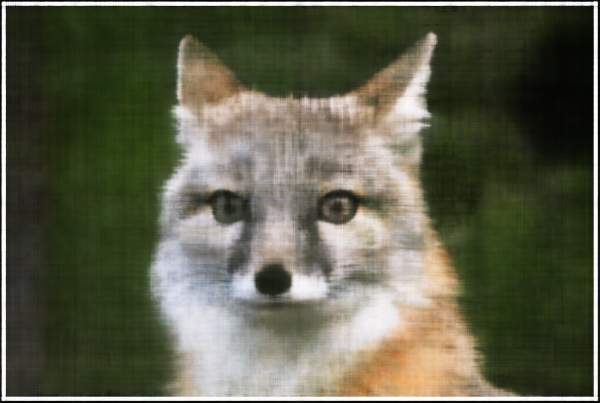
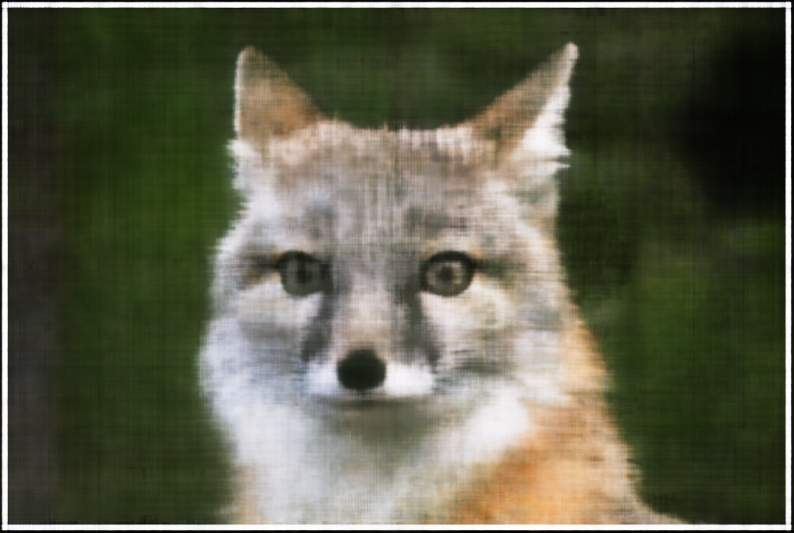

Intro

This project shows how to use Neural Radiance Fields to create images or video from novel viewing angles.
This project shows how to use Neural Radiance Fields to create images or video from novel viewing angles.
For this part, we created a Sinusoidal Positional Encoding layuer that converts a tensor of coordinates into a tensor of Positional Encodings. The main structure is a multi layer perceptron with 3 layers.
 



I tried to find the best combination of learning rate and number of layers. It trurns out 7 layers with a small learning rate of 0.001 yielded the best results.

This is the transform functionm, which simply converts 3D points from camera coordinates to world coordinates. takes a transformation matrix (c2w) and a batch of 3D points (x_c), extends the points into homogeneous coordinates, applies the transformation, and then converts the result back into standard 3D coordinates by dividing by the homogeneous scale factor.
This is the pixel_to_camera function, whcih transforms 2D pixel coordinates (uv) from the image plane into 3D camera coordinates. Using the camera matrix (K) and a scaling factor (s), it first converts the pixel coordinates into homogeneous form, applies the inverse of the intrinsic matrix to map them to normalized camera coordinates, and then scales the result to return the 3D camera coordinates.
This is the pixel_to_ray function, which computes the origin (r_o) and direction (r_d) of 3D rays in world coordinates, given pixel coordinates (uv), the camera intrinsic matrix (K), and the camera-to-world transformation matrix (c2w). It first determines the camera origin in world coordinates by inverting the camera's rotation and translation. Then, it converts the pixel coordinates into normalized camera coordinates using pixel_to_camera and transforms them to world coordinates using transform. Finally, it calculates the ray direction from the camera origin to the transformed world coordinates and normalizes it. The resulting rays (r_o, r_d) describe the path of light through the camera into the scene.
This is the sample_rays_from_images function, which samples pixel values and computes 3D rays for a batch of images. It converts pixel coordinates to rays using the pixel_to_ray function and gathers the pixel values, ray origins, and directions for all images into concatenated tensors.
This is thee sample_points_along_rays function, which samples points along each ray by generating num_samples points between a specified near and far distance. It perturbs the sampling positions if perturb is enabled, then calculates the 3D coordinates of the sampled points along the ray by using the ray origins (rays_o) and directions (rays_d).
This class converts an image into a PyTorch dataset where each pixel is treated as a data sample. For a given index, it returns the normalized 2D coordinates of the pixel and its color values as tensors.
I created this neural network composed for several smaller subnets. I reused the positoinal encoding network from the first part. For the forward pass, we call sample along the rays, which as passed into the model, which is then reshaped and passed into the volrend function. To render the image, the x and y pixels are combined into a tensor and passed into pixel to ray, which is then passed into the model and volrend to create the image.

This is volrend function, which takes in B x N x 1 sigmas and B x N x 3 colors tensors and well as sampled deltas. It calculates the cumulative absorption (cumulative_sigmas) and the probabilities of light not terminating (prob_not_terminate) or terminating (prob_terminate) at each point. Probabilities are used to weight the RGB colors, and the function then returns the accumulated color values] after rendering the scene.


In the volrend_colorbg function, I added the background color by first calculating the total opacity along each ray (bg_prod) as the sum of the products of sigmas and step_size. The background weight (bg_weights) is then computed as the exponential of the negative bg_prod, determining how much of the background color should be visible. The background color, defined as a light blue ([0.5, 0.7, 1.0]), is weighted by bg_weights, and this contribution is added to the cumulative colors obtained from the volumetric rendering. This results in the final color that incorporates both the volumetric effects and the background. It looks awful because some of the floor appears as opaque.